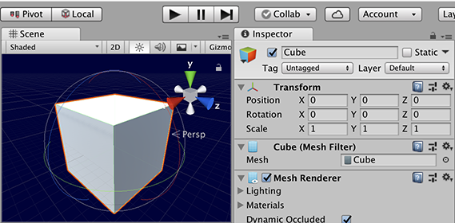
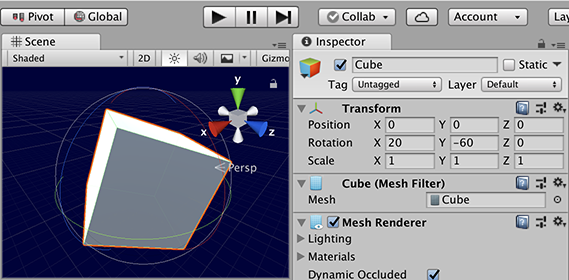

使用 Transform.Rotate 以各种方式旋转 GameObjects。通常以欧拉角而不是四元数提供旋转。
可以在世界轴或本地轴中指定旋转。
世界轴旋转使用 Scene 的坐标系，因此在开始旋转 GameObject 时，它的 x、y 和 z 轴与 x、y 和 z 世界轴对齐。所以，如果在世界空间中旋转一个立方体，它的轴就会与世界对齐。在 Unity 编辑器的 Scene 视图中选中一个立方体时，将显示左Gizmos下以及正向/反向旋转轴的旋转 Gizmos。移动这些 Gizmos 将使立方体绕轴旋转。如果取消选择然后重新选择该立方体，这些轴将重新开始在世界中对齐。
本地旋转使用 GameObject 本身的坐标系。因此，新建的立方体将使用设置为零旋转的 x、y 和 z 轴。旋转该立方体将更新旋转轴。如果取消选择然后重新选择该立方体，将按之前的相同方向显示这些轴。

在本地辅助图标开关中未旋转的立方体\
在本地辅助图标开关中旋转的立方体\
在全局辅助图标开关中未旋转的立方体\

在全局辅助图标开关中旋转的立方体\
有关 Unity 中的旋转的更多信息，请参阅 Unity 中的旋转和方向。
| eulers | 要应用的旋转。 |
| relativeTo | 确定在游戏对象本地还是相对于世界空间中的场景来旋转游戏对象。 |
应用一个围绕 Z 轴旋转 eulerAngles.z 度、围绕 X 轴旋转 eulerAngles.x 度、围绕 Y 轴旋转 eulerAngles.y 度（按此顺序）的旋转。
旋转采用欧拉角形式的 Vector3 参数。第二个参数是旋转轴，可以将其设置为本地轴 (Space.Self) 或全局轴 (Space.World)。旋转以欧拉角度数表示。
| relativeTo | 确定在游戏对象本地还是相对于世界空间中的/场景/来旋转游戏对象。 |
| xAngle | 围绕 X 轴旋转游戏对象的度数。 |
| yAngle | 围绕 Y 轴旋转游戏对象的度数。 |
| zAngle | 围绕 Z 轴旋转游戏对象的度数。 |
此方法的实现应用一个围绕 Z 轴旋转 zAngle 度、围绕 X 轴旋转 xAngle 度、围绕 Y 轴旋转 yAngle 度（按此顺序）的旋转。
旋转可以使用 x、y 和 z 的 3 个浮点数指定欧拉角。
该示例显示两个立方体：一个立方体使用 Space.Self（GameObject 的本地空间和轴），而另一个立方体使用 Space.World（相对于 Scene 的空间和轴）。它们都会先在 X 轴上旋转 90 度，因此在默认情况下不与世界轴对齐。使用在检视面板中公开的 xAngle、yAngle 和 zAngle 值可查看不同的旋转值如何应用于两个立方体。可能会注意到，立方体直观旋转的方式取决于使用的当前方向和空间选项。在 Scene 视图中选择立方体时尝试设置不同值，以尝试了解这些值如何交互。
using UnityEngine;
// Transform.Rotate example // // This script creates two different cubes: one red which is rotated using Space.Self; one green which is rotated using Space.World. // Add it onto any GameObject in a scene and hit play to see it run. The rotation is controlled using xAngle, yAngle and zAngle, modifiable on the inspector.
public class ExampleScript : MonoBehaviour { public float xAngle, yAngle, zAngle;
private GameObject cube1, cube2;
void Awake() { cube1 = GameObject.CreatePrimitive(PrimitiveType.Cube); cube1.transform.position = new Vector3(0.75f, 0.0f, 0.0f); cube1.transform.Rotate(90.0f, 0.0f, 0.0f, Space.Self); cube1.GetComponent<Renderer>().material.color = Color.red; cube1.name = "Self";
cube2 = GameObject.CreatePrimitive(PrimitiveType.Cube); cube2.transform.position = new Vector3(-0.75f, 0.0f, 0.0f); cube2.transform.Rotate(90.0f, 0.0f, 0.0f, Space.World); cube2.GetComponent<Renderer>().material.color = Color.green; cube2.name = "World"; }
void Update() { cube1.transform.Rotate(xAngle, yAngle, zAngle, Space.Self); cube2.transform.Rotate(xAngle, yAngle, zAngle, Space.World); } }
| angle | 要应用的旋转度数。 |
| axis | 要应用旋转的轴。 |
| relativeTo | 确定在游戏对象本地还是相对于世界空间中的场景来旋转游戏对象。 |
用给定角度定义的度数围绕给定轴旋转该对象。
旋转具有轴、角度以及本地或全局参数。旋转轴可以为任何方向。